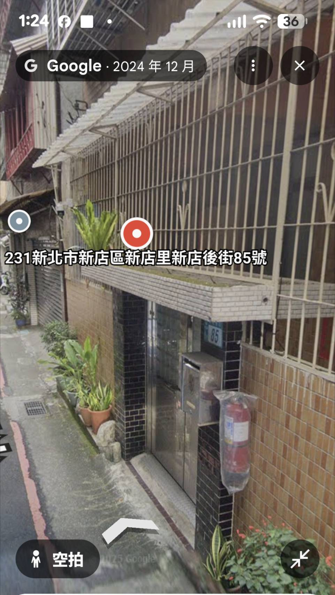
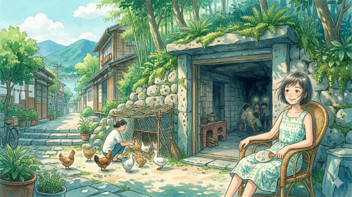
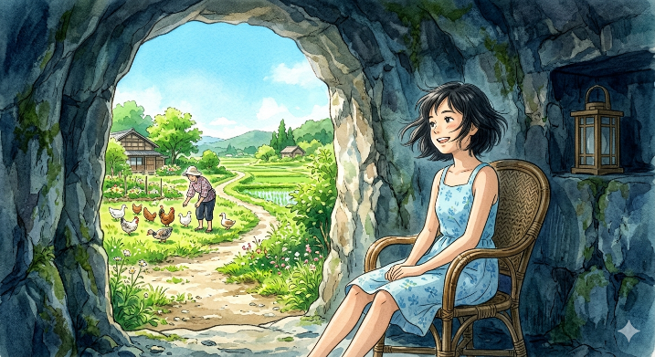
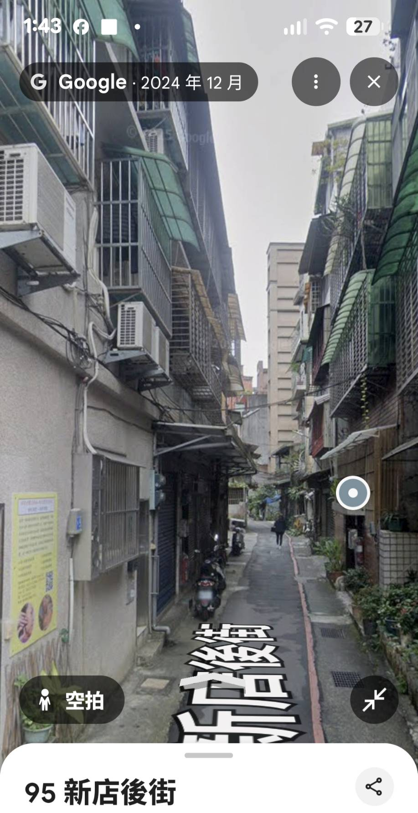
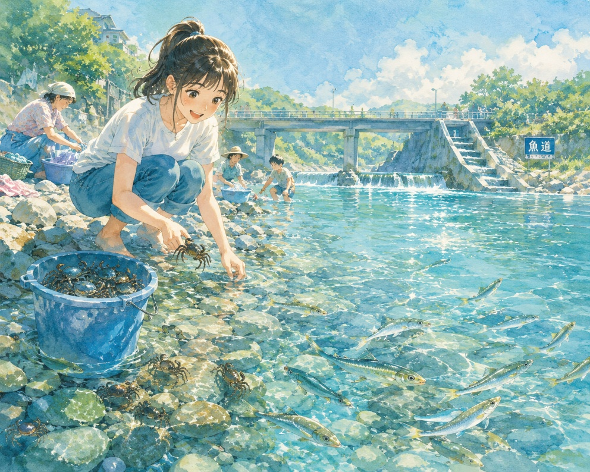
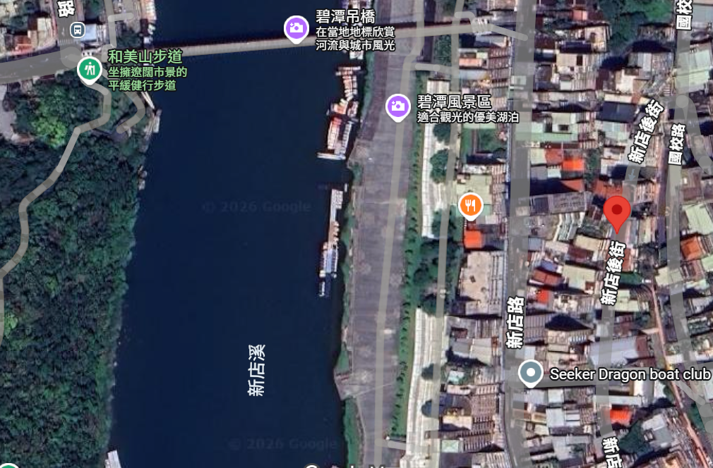
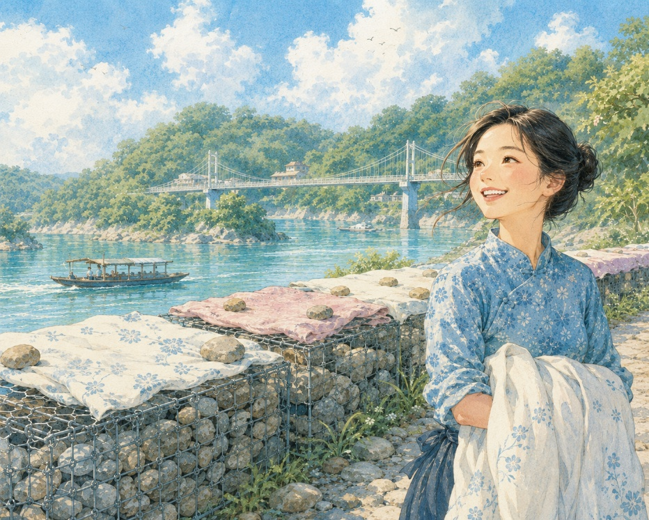
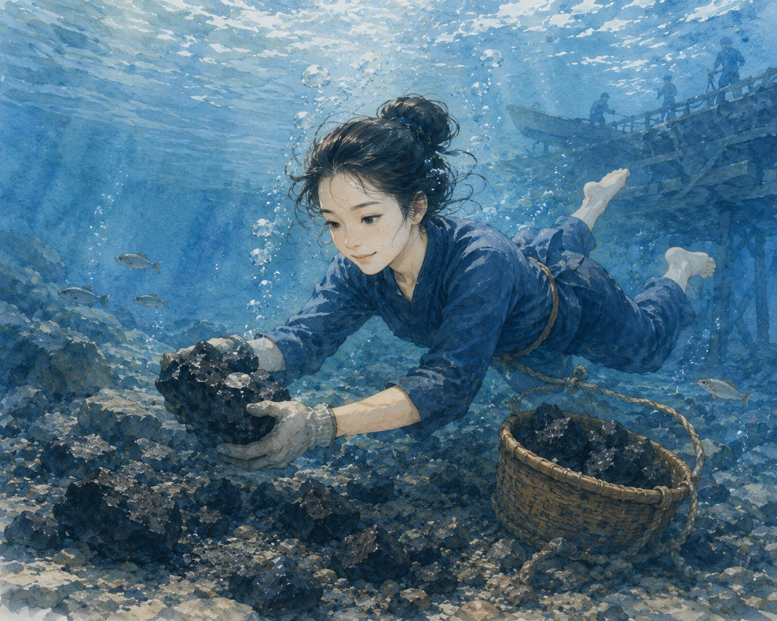
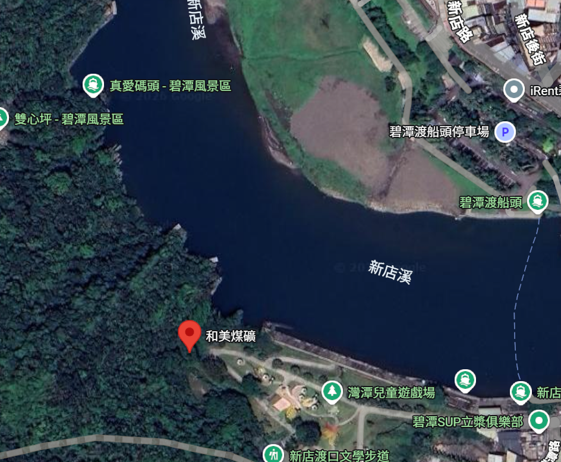
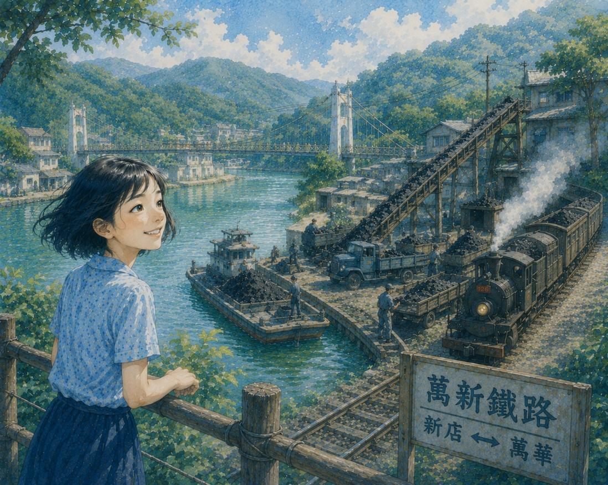

一、甘泉般清澈的門前水圳
古：圖片、情景示意圖
今：新店後街

歷史敘說：
據劉氏夫婦：早期新店後街85號迎門是山壁，有防空洞，其山上有墳墓，更有瑠公圳分流小水溝流過、輕便車道行經門前（按：應是大坪林圳分流）。
故事、收穫∕心得∕感想
我是劉大嫂，今年 75 歲了，我們劉家三代都住在新店後街這附近，這裡就是我的娘家，也是我生活了一輩子的家。回想起以前的小時候，那段時光真的非常美好，腦海裡全是碧潭清澈的水和我們鑽進鑽出的防空洞。
瑠公圳的水，曾經是會發光的。不是燈火映照的那種亮，而是一低頭，便能看見天空與人影一起沉進水底的清亮。那時候，我家門前那條細細的水溝，像一條從碧潭分流而來的小河，安安靜靜穿過後街，也穿過我的童年。
夏天一到，我們這群孩子總赤著腳跑出去。大人還在屋裡搖蒲扇，我們早已噗通一聲跳進圳水裡。水涼得很，像山裡剛醒來的泉。鰻魚貼著石縫游，鱔魚忽地一閃，小蝦透明得像水的一部分，偶爾還能摸到一尾肥大的溪蝦，在掌心裡彈跳。我們不怕曬，也不怕跌，整條圳就是天然的游泳池，連笑聲都被水流帶得很遠。
有時玩累了，我便蹲在岸邊，用鐵杓舀水喝。那水竟真有甘味，涼涼滑過喉嚨，像碧潭把整座山林的清氣都送進了我們身體裡。如今想來，童年的幸福其實很簡單，不過是一渠清水，一身濕透的衣裳，和黃昏時母親站在門口喊我們回家的聲音。
後來圳水變窄了，也沉默了。許多魚蝦不見蹤影，孩子們不再往水裡跳。我偶爾經過舊時門前，總覺得那條圳還在，只是悄悄流進了歲月深處，成了一條只有記憶才能涉過的河。
二、冬暖夏涼的神祕樂園
古：圖片、情景示意圖


今：新店後街

歷史敘說：
據劉氏夫婦：早期新店後街迎門便是山壁，有不少防空洞，四通八達。
童年故事
山邊的孩子，大多都有幾處屬於自己的祕密天地，而我最難忘的，便是娘家附近那一整片深深的防空洞。
那時候的山壁，彷彿被歲月鑿開無數條幽暗的脈絡，一洞連著一洞，有的通往山上，有的竟能一路繞到新店國小附近。大人總說裡頭深，不可亂跑，可我們這些孩子，偏偏把它當成探險的王國。別的孩子進洞得提著蠟燭，我膽子大，總是摸黑就敢進去。手扶著冰涼粗糙的石壁，腳下踩著濕潤泥地，慢慢地走，竟也不覺害怕。
洞裡不是空蕩蕩的，還有房間、有灶台，像從前真有人在裡頭生活過似的。外頭砌著水泥牆，裡面卻是天然風化石，所以冬天不冷，夏天反倒沁著一股清涼。盛夏午後，外頭熱得連風都發燙，我便搬張籐椅坐在洞口乘涼，看光影斜斜照進來，空氣裡混著泥土味與青草香，整個人都靜了下來。
母親還會在洞口養雞養鴨。雞啼聲、鴨叫聲，伴著山風吹進洞裡，那防空洞便不只是躲空襲的地方，更像我們家的另一個院落。如今歲月遠了，再想起那些幽深曲折的洞穴，心裡仍覺得，它們像山腹裡藏著的一段童年時光，清涼、安靜，又帶著一點說不出的神祕。
三、碧潭畔戲水時光
古：圖片、情景示意圖

今：新店後街

歷史敘說：
據劉大嫂敘述：以前我們小孩子就是到那邊河邊，踩到石頭上玩耍嬉戲，親近大自然，你看，各個身心靈都很健康。
童年故事
夏天一到，碧潭的水便亮了起來。
那時候的新店溪很深，深得讓人不敢久望。堤防對岸邊的巨石上豎刻著大紅字「水深危險」，它可不像現在看到的那麼高，從前只是斜斜立在岸邊，像一句隨口的叮嚀。我們婦人家挽著竹籃、提著木桶，小心踩著堤防石階往下走，走到底，就是河水了。水有時漲得高，幾乎從門後一路漫過來，河邊卻依然熱鬧，洗衣聲此起彼落，棒槌敲打石板，像夏日河岸的節拍。
溪水清得很。蹲下身，連水底細石都看得見。石縫裡到處藏著螃蟹，黑的、青的、小小一隻，手一翻，便能抓進桶裡，不消半日，就滿滿一桶晃動的腳影。我們孩子玩得高興，大人卻總說不能吃。老人家壓低聲音，說碧潭常有人投水，螃蟹會啃腐肉。聽了雖怕，卻還是忍不住蹲在岸邊，看牠們橫著身子飛快逃竄。
真正令人難忘的，是香魚！
牠們在陽光下閃著銀白微青的光，像溪水裡游動的小月亮。身形細瘦，卻美得安靜，一尾尾逆流而上。那時候的新店溪，到處都是香魚，水一動，整條溪便像活了。我一直覺得，只有真正乾淨的河，才養得出那樣的魚。
如今河岸築起水泥橋，攔沙壩旁也開了魚道。偶爾聽人說，毛蟹又回游了。可是啊，那種滿溪生靈的熱鬧，早已不是從前模樣。
有時我仍會想起那年的夏天。烈日照著河面，婦人的笑聲浮在水氣裡，而我們赤腳站在溪邊，以為整個天地，都會這樣清清亮亮地流下去。
四、碧潭蛇籠：劉大嫂的河岸生活記憶
古：圖片、情景示意圖

今：新店後街與溪岸相去日已遠
歷史敘說：
據劉大嫂敘述：早期新店後街後門距離溪邊，很近又方便，近到洗好的被單，就直接將被單晾曬在鐵製的蛇籠上。
童年故事
夏天的碧潭，總有一股曬過太陽的味道。
河岸邊那些蛇籠，從前是竹子編的。竹篾一條條交錯，裡頭塞滿石塊，沿著河堤蜿蜒，像伏在水邊沉睡的大蛇。後來，一場大水來了。溪水暴漲，濁浪翻捲，把竹蛇籠整個沖散，只剩零落竹枝卡在岸邊。再後來，換成了鐵絲網做的蛇籠，冷硬硬的鐵網裡，一樣填著石頭，只是再也沒有竹子的氣味了。
可是，我們還是喜歡往那裡跑。
婦人們洗完衣服、床單、厚被單，便一路提到河岸邊曬。鐵網蛇籠寬寬長長，曬起東西特別方便。一大片白床單攤開，在陽光底下鼓滿了風，遠遠望去，像停泊河邊的白帆船。風吹得急時，我們便蹲下來，到處撿石頭壓住被角。一顆石頭壓一角，再一顆石頭壓住另一端，石頭曬得燙燙的，掌心卻很快樂。
那時候的河岸沒有什麼漂亮設施。沒有觀光步道，也沒有整齊欄杆。可是，整條河像是大家共用的院子。孩子在石縫裡抓魚蝦，大人一邊洗衣，一邊聊天，陽光把棉被曬出暖暖的味道。風從新店溪吹來，吹得床單獵獵作響，也把笑聲吹得很遠。
現在再經過碧潭，看見的是水泥、欄杆與整齊的河岸工程。蛇籠還在，卻只是工程的一部分，再也沒有人把被單晾上去了。
我卻總記得，那些被風吹得鼓起來的白床單。
它們像夏天留在河邊的一首歌，亮亮的，軟軟的，在歲月深處，一直飄著。
五、碧潭水下尋煤：和美礦業生活紀實
古：圖片、情景示意圖

今：舊渡船口與和美煤礦之間，路上、水下殘留的黑金

歷史敘說：
早期碧潭居民與當地和美煤礦產業共生的生活縮影，也是利用自然資源貼補家用的一種方式。
童年故事
大姐下水的時候，總是天色還早。
碧潭的霧氣浮在河面，煤礦那頭已經傳來鐵器碰撞的聲音。和美煤礦的煤，從西岸運過來，一船一船靠岸，再由工人搬上輸送帶，送往卡車或火車。黑色的煤塊一路滾動，總有一些跌落河裡，沉下去，像沉默的石頭。
岸邊的人，低著頭撿拾碎煤，撿一小袋，也夠燒幾頓飯了。可是姐姐不同。
她會脫下鞋，慢慢走進水裡，溪水先淹過腳踝，再淹到腰，她深吸一口氣，忽然就沉下去。河面只剩一圈一圈晃開的水紋。我總站在岸邊等，心懸著，怕她太久沒浮上來。可是每一次，她總會從較深的地方冒出頭，濕漉漉的頭髮貼在額前，雙手抱著一大塊黑亮的煤。
那煤，像她從河底挖出的夜色。
有人說她像海女。其實她哪裡是什麼海女呢？她不過是家裡最大的女兒。她知道米缸快空了，知道母親夜裡添煤時總捨不得多放一塊。於是，她一次又一次潛進冰冷的河底，把那些沉下去的煤撈回來。
我後來才明白，女人的一生，有時也是這樣的。
總在人看不見的深處，屏住呼吸，默默下沉，再把一家人的日子，從幽暗裡抱回岸上。
如今碧潭早已沒有運煤船了。河水映著觀光燈火，亮得陌生。我偶爾經過，仍會想起姐姐浮出水面滿身溼漉又晶亮的模樣！她抱著煤塊大口喘氣，眼睛卻亮亮的，像一個剛從命運深處游回來的人。
六、晴日的河畔工業小鎮
古：圖片、情景示意圖

今：舊渡船口與和美煤礦之間，路上、水下殘留的黑金
歷史敘說：
碧潭西岸還有和美煤礦在採礦。煤礦用船運到東岸，再透過輸送帶送到火車或卡車上。那段日子是萬新鐵路最光榮與具效用的火紅歲月。
童年故事
如今的人到碧潭，多半是來看水色的。黃昏時踩踩天鵝船，夜裡看看吊橋燈影，彷彿這地方自古便是悠閒的。然而老一輩的新店人知道，從前的碧潭，其實有著濃濃的煤煙味。
那時西岸的和美山上還在採煤。山裡挖出的煤，不是直接走陸路，而是先裝船。細長的木船，一趟趟橫過新店溪，把黑亮亮的煤塊運到東岸。到了岸邊，再接上輸送帶。有時也靠人工，一簍一簍地搬。煤從山裡出來，過了水，再往古亭、萬華方向去，最後進了城市的爐灶與工廠。整個台北的日常熱氣，某種程度上，也是新店山區一鏟一鏟挖出來的。
我一直覺得，老地方最有意思的，不只是風景，而是它曾經如何辛苦地活著。
彼時的碧潭，不是觀光地，而是一處運輸現場。岸邊有輸送帶轟隆隆地轉，煤灰飛散，落在河面，也落在人家窗台。孩子經過時，腳底總踩著細碎煤屑。風一吹，空氣裡便有一股乾燥而刺鼻的黑煙味。久了，新店街居民開始抗議，嫌空氣不好，衣服曬出去也總蒙著一層灰。
但有趣的是，人總是如此。當一個地方還真正肩負生產功能時，大家嫌它髒、嫌它亂；等到產業消失，河岸整治乾淨了，又開始懷念從前的生活氣息。
如今站在碧潭邊，很難想像這裡曾有運煤船來回穿梭。輸送帶沒有了，煤灰沒有了，連那種帶點粗礪感的勞動景象，也一起消失了。剩下的是漂亮的河景，以及人們對往日時代一種模糊而溫熱的記憶。